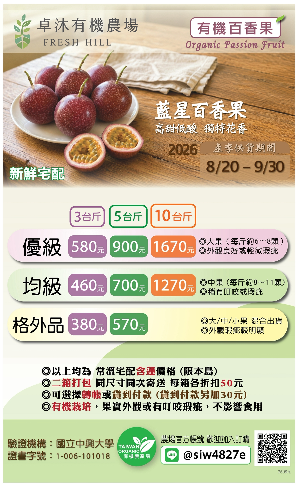

初秋的藍星百香果已開始少量採收出貨，歡迎訂購～🙏
訂購時，請利用【👉空白訂購單】，自行複製修改後，貼上聊天室即可。
📌3台斤百香果 + 4台斤芭樂 或 5台斤百香果 + 6台斤芭樂，可以打包冷藏出貨。
☘️～🐞～☘️～🐞～☘️
藍星百香果是由「台農一號」與「滿天星」雜交後，培育出的新品種，它完美結合了兩者的優點，具備滿天星的高甜度低酸度特性，以及台農一號的香氣，還帶有特殊的花果香。
百香果是會後熟的水果，即在室溫保存下仍會繼續熟成。百香果在熟成的過程中，蒂頭會由青綠色轉成黃褐色，果皮顏色也漸漸會由紅色轉成紫紅色，此時即是百香果的最佳賞味時間。
收到百香果後，請立即打開紙箱或取出保持通風。雖然百香果可於室內放置數日，為避免高溫造成熟化過快，建議您儘早放入冰箱保存，夏季在3~4日內、秋冬季在5~7日內，用紙袋包裹後裝入塑膠袋，放入冷藏以延長保鮮期，並請盡快食用以保新鮮。